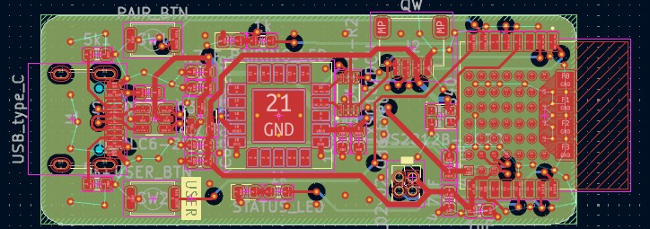

Zigbee Air Quality for Indoors Monitoring
Project Introduction
This project is a Zigbee‑based indoor air quality monitor designed to measure CO₂, temperature, and humidity. It integrates seamlessly with Home Assistant and other Zigbee ecosystems. The device is built around a Nordic nRF52840 module and a Sensirion SCD40/SCD41 CO₂ sensor, providing accurate environmental data for smart‑home automation and indoor monitoring.
1. Hardware Design
The PCB was designed using KiCad 8.x and follows best practices for RF layout, sensor placement, and low‑power embedded design. The nRF52840 module requires careful antenna keep‑out and ground stitching, while the SCD4x sensor benefits from thermal isolation and clean I²C routing.
Key hardware components include:
- MCU/Radio: Nordic nRF52840 module
- CO₂ Sensor: Sensirion SCD40/SCD41
- Interfaces: I²C communication
- Power: USB Type‑C
- Connectivity: Zigbee 3.0, Home Assistant compatible
- EDA Tool: KiCad 8.x
- Board Type: Multilayer PCB

Project 3D View

PCB Layout View
2. Firmware
The firmware is written in C/C++ for the nRF52840 and implements Zigbee clusters sensors for environmental sensing. It handles CO₂, temperature, and humidity measurement, reporting, and low‑power operation suitable for continuous indoor monitoring.
- Language: C/C++
- Features: CO₂, temperature, humidity measurement & reporting
- Communication: Zigbee environmental sensing clusters
- Power: Low‑power operation
3. Skills Demonstrated
- PCB Design: KiCad, multilayer layout
- Embedded Systems: nRF52840, low‑power design
- Wireless: Zigbee protocol, 2.4 GHz RF layout
- Sensing: CO₂, temperature, humidity
- Firmware: C/C++, sensor drivers, Zigbee integration
- Tools: Oscilloscope, logic analyzer, multimeter
- Integration: Home Assistant and smart‑home ecosystems